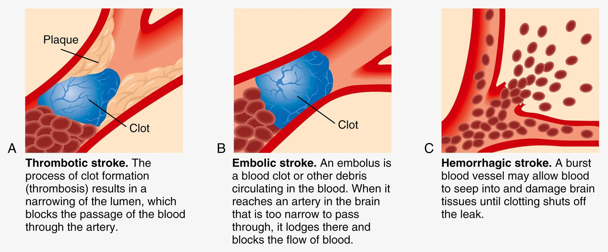
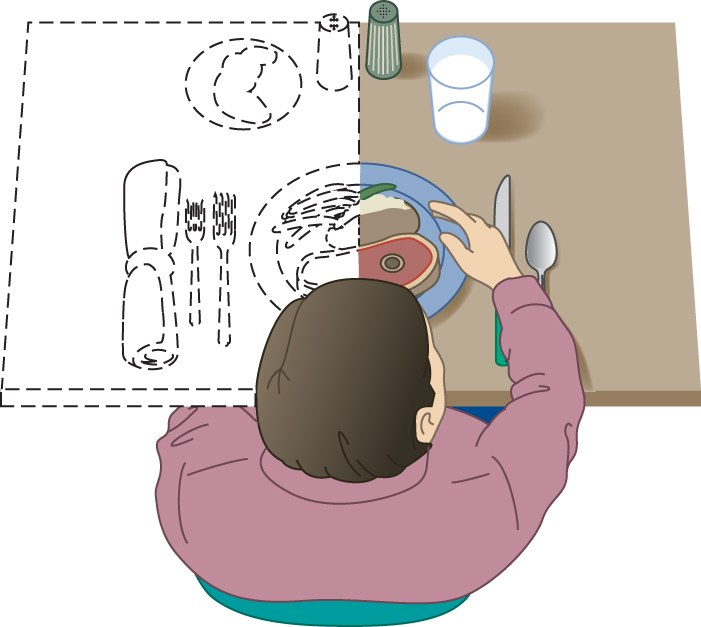
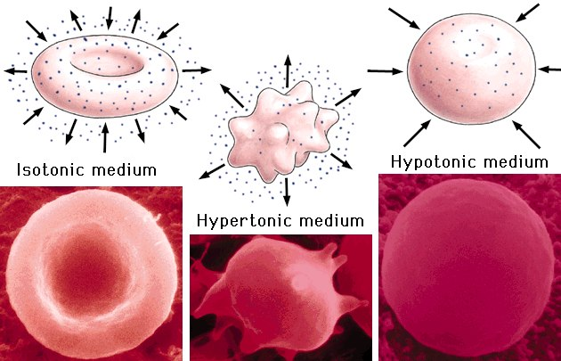
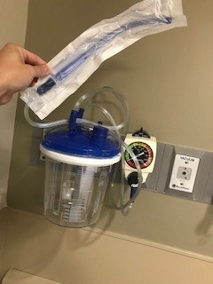
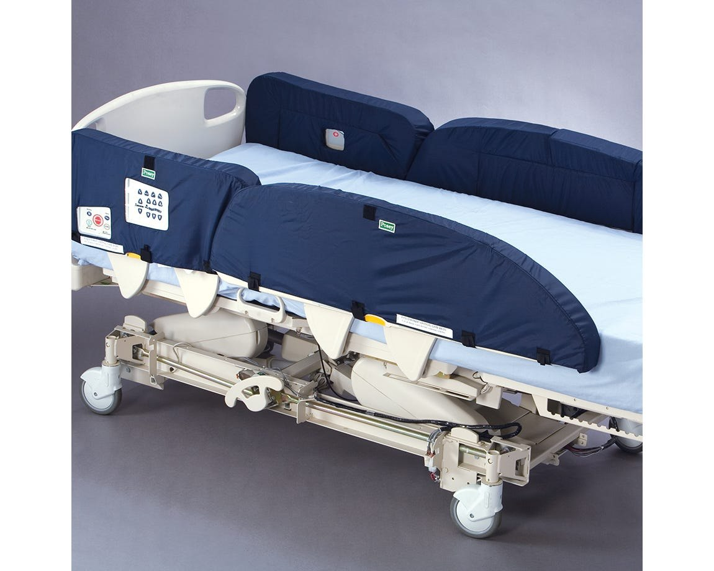
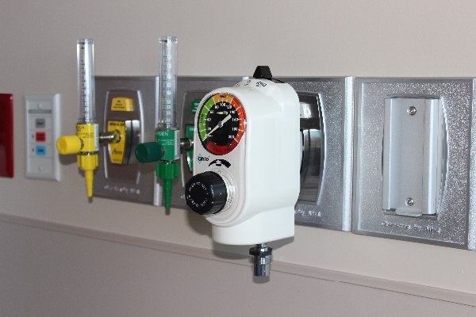

Review · Topic 12
Neuro
Neurologic Assessment
For further study, see Fundamentals II Week 5 – Neurosensory.
The basic assessment: general survey, level of consciousness, orientation. A focused assessment adds the rest.
| Assessment | What to Look For |
|---|---|
| General survey |
|
| Level of consciousness |
|
| Sensory function |
|
| Motor function |
|
| Memory and mental status |
|
| Reflexes |
|
| Respiratory functioning |
|
- Hypoxia: the oxygen saturation.
- Hypoglycemia: a blood sugar. Its signs can mimic a stroke.
- Hypotension: the blood pressure. A poorly perfused brain shows neurologic symptoms.
- Hypoventilation: count the respirations.
Levels of Consciousness
| Level | What It Looks Like |
|---|---|
| Alert |
|
| Lethargic (somnolent) |
|
| Obtunded |
|
| Stupor (semi-comatose) |
|
| Comatose |
|
Obtunded, stupor and coma are the more significant changes.
Glasgow Coma Scale (GCS)
For further study, see Fundamentals II Week 5 – Neurosensory.
An objective assessment with a numeric value, also called EMV: eyes, motor, verbal. Scores run 3 to 15: a zero is not possible.
| Score | Eye Opening | Best Motor Response | Best Verbal Response |
|---|---|---|---|
| 6 | — | Obeys commands | — |
| 5 | — | Moves to localized pain | Oriented to time, place and person |
| 4 | Spontaneously | Flexion withdrawal from pain | Confused |
| 3 | To speech | Abnormal flexion (decorticate) | Inappropriate words |
| 2 | To pain | Abnormal extension (decerebrate) | Incomprehensible sounds |
| 1 | No response | No response | No response |
Brain injury by GCS: severe 8 or less, moderate 9 to 12, mild 13 to 15.
Stroke
For further study, see Med Surg II Week 6 – Cerebral Vascular Accident.
Also called a CVA (cerebral vascular accident), or a brain attack: acute stroke care is as urgent as a heart attack's.
Types of Stroke
| Type | Cause | Onset |
|---|---|---|
| Thrombotic (ischemic) | Atherosclerosis: a ruptured plaque forms a clot. A heart attack, in the brain. | Evolves over minutes to hours. |
| Embolic (ischemic) | An embolus, usually from the heart: AFib, heart valve disease, endocarditis. | Sudden: neurologic deficits develop rapidly. |
| Hemorrhagic | Vessel integrity interrupted, and bleeding: an intracranial bleed, an aneurysm, an AV malformation. Hypertension is the most common cause. | Sudden, then progresses over minutes to hours. |
Thrombotic is the most common, more than half of all strokes, and embolic the second. Hemorrhagic has a very poor prognosis beside the other two.

Transient Ischemic Attack (TIA)
- A transient episode of neurologic dysfunction from ischemia, with no acute infarction of the brain.
- To a stroke as angina is to an MI: a warning, with no tissue death.
- Symptoms usually last less than 1 hour.
- No way to predict the outcome: a third have no other event, a third have more TIAs, a third progress to stroke.
Clinical Manifestations
They follow the location of the stroke, not whether it is ischemic or hemorrhagic. Weakness falls on the side opposite the stroke.
| Area | What to Expect |
|---|---|
| Motor function |
|
| Communication |
|
| Affect |
|
| Intellectual function |
|
| Spatial-perceptual |
|
| Elimination |
|

Acute Care
Goals for both types: preserving life, preventing further brain damage, reducing disability. Most strokes are treatable, and the time of onset is critical information.
Ischemic Stroke
- Manage: circulation, airway, breathing. Then the ICP, with interventions that improve venous drainage.
- Monitor: a baseline neurologic assessment, then closely for a growing deficit. Many worsen in the first 24 to 48 hours.
- BP: often elevated right after a stroke, perhaps a protective response that maintains cerebral perfusion. The provider sets specific BP guidelines.
- Fluids: hydrate adequately, to promote perfusion and decrease further brain injury.
- Clot buster: IV tPA (alteplase), the only drug approved for acute ischemic stroke. Started within 4.5 hours of onset (3 hours by FDA approval, 4.5 under certain criteria), after careful screening.
- Endovascular: a mechanical thrombectomy with a stent retriever, or carotid angioplasty with a stent, to improve perfusion.
- Once stable: anticoagulants and platelet inhibitors, to prevent further clots, and statins.
- Examples: aspirin, ticlopidine, clopidogrel, dipyridamole.
Hemorrhagic Stroke
- Manage: airway, breathing, circulation, and the ICP: often unstable.
- Surgery, chosen by the cause: evacuating a hematoma, resection or radiosurgery, clipping or coiling an aneurysm.
Managing increased ICP is taught in Neuro Assessment and Increased ICP
Who is not a candidate for tPA, and its bleeding risk, are taught in Brain Injury and Stroke
Recognizing and Assessing a Stroke
- Face: ask for a smile. One side droops.
- Arms: raise both. One drifts down, or will not rise.
- Speech: repeat a simple phrase. Slurred, strange or absent.
- Time: call for help at once, and note when the symptoms began.
Nursing Assessment in Acute Care
- Primary assessment: cardiac, respiratory and neurologic status.
- If stable, the history: symptom onset and duration above all, with its nature and changes. Similar symptoms before. A family history of stroke, aneurysm or cardiovascular disease.
- Secondary assessment: a comprehensive neurologic exam. Level of consciousness, the NIH Stroke Scale (NIHSS), cognition, motor abilities, cranial nerves, sensation, proprioception, cerebellar function (motor control), deep tendon reflexes.
- The NIHSS: nurses do it all the time. Nurses on a neuro floor are NIHSS certified.
The stroke assessment in order, with the NIHSS scores, is taught in Brain Injury and Stroke
DI and SIADH
For further study, see Med Surg II Week 4 – Antidiuretic Hormone Disorders.
ADH (antidiuretic hormone, or vasopressin), with thirst, is the major regulator of the body's water. It moves water only: potassium is not affected.
Concentrated or Low Volume
Plasma osmolality up, or circulating fluid volume down.
Thirst and ADH
Thirst: more fluid taken in. ADH secreted from the posterior pituitary: less water excreted.
Water Retained
Circulating fluid volume rises.
ADH and Thirst Fall
A negative feedback loop.

SIADH vs DI
SIADH: Syndrome of Inappropriate ADH
- ADH: overproduced. More water reabsorbed in the renal tubules.
- Fluid volume: intravascular volume up, an excess. Cells swell as fluid shifts into them.
- Serum: dilutional hyponatremia, and a decreased serum osmolality.
- Cause: most often lung cancer cells that secrete ADH (ectopic hormone production).
- Signs: those of hyponatremia, by how severe it is and how fast it came on. Muscle cramping, dyspnea, fatigue. Dulled sensorium, confusion, lethargy. Impaired taste, anorexia.
- Nursing problems: excess fluid volume. Risk for injury from an altered mental status.
DI: Diabetes Insipidus
- ADH: underproduced, or the kidneys do not respond to it. Less water reabsorbed.
- Fluid volume: intravascular volume down, a deficit. Pure water lost: dehydrated and hemoconcentrated.
- Serum: hypernatremia, and a serum osmolality of 300 or higher. It makes the patient thirsty.
- Cause, neurogenic (central): head trauma. Abrupt, with the most severe signs. After head trauma, self-limiting: it resolves on its own, and the signs are treated meanwhile.
- Cause, nephrogenic: the kidneys do not respond to ADH. Lithium is the most common drug cause. Less abrupt and less severe.
- Signs: polyuria, 5 to 20 L a day, as dilute as water: a very low urine specific gravity and urine osmolality. Polydipsia. Fatigue from nocturia, and weakness.
- Nursing problems: deficient fluid volume. Risk for injury from an altered mental status.
SIADH and DI Care
Caring for SIADH
- Goal: restore a normal fluid volume and osmolality.
- Monitor: signs of volume overload, I&O, daily weights, mental status.
- Mild: sodium below 125, mild symptoms. Fluid restriction only, 1,000 mL a day.
- Severe: sodium below 120, or severe symptoms. 3% saline IV, slowly, and fluids restricted to 500 mL a day.
- IV fluids: per order, the rate closely monitored.
- Drugs: only for chronic SIADH, not first line. Sometimes diuretics, or demeclocycline, which blocks ADH's effects.
Caring for DI
- Goal: maintain the fluid and electrolyte balance.
- Monitor: I&O, daily weights. Labs: urine specific gravity (1.010 to 1.030), serum osmolality (270 to 290), serum sodium (135 to 145).
- IV fluids.
- Drugs: desmopressin, a synthetic ADH in very small doses: nasal spray, PO, IV, subQ. With fluids, the cornerstone of treatment for neurogenic DI.
- Notify the provider: urine volume up with the specific gravity down. It is getting worse, and the desmopressin dose may need raising.
Seizure Precautions
For further study, see Fundamentals II Week 5 – Neurosensory and Med Surg II Week 6 – Seizure Disorder.
Seizure Precautions: In the Room
- Suction, set up and working.
- Oxygen.
- Padded bed rails, where the agency's policy has them.
- Why these patients: after a TBI, blood on the brain irritates the tissue, a risk for seizures.



The Ambu bag, IV access and EEG monitoring are taught in Brain Injury and Stroke
| First Aid | What to Do |
|---|---|
| Airway |
|
| Safety |
|
| Monitor |
|
| Rest and support |
|